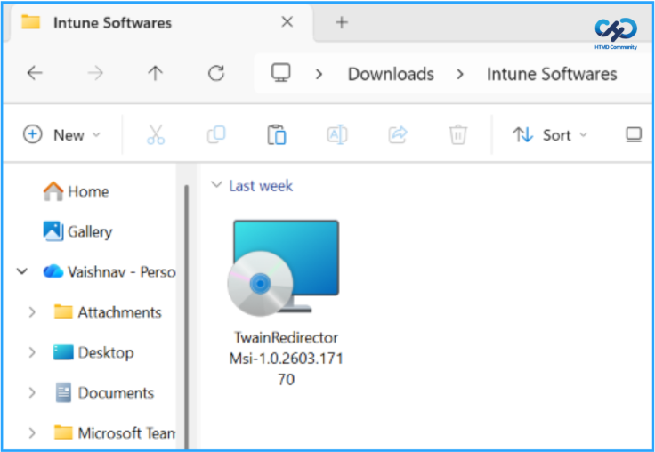
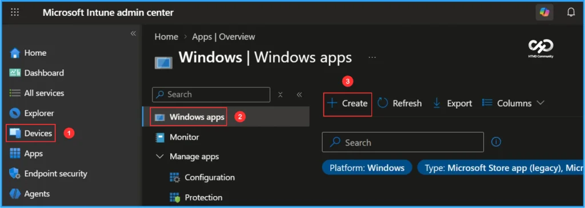
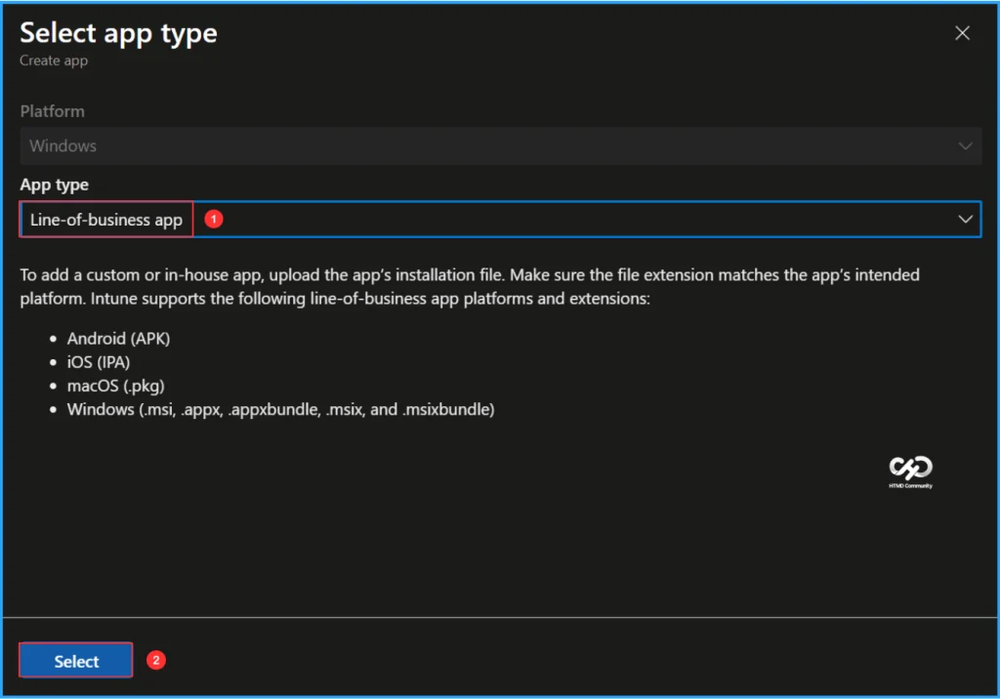
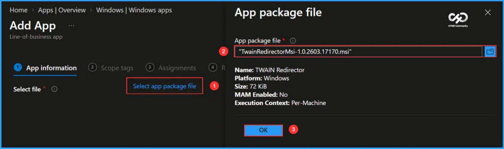
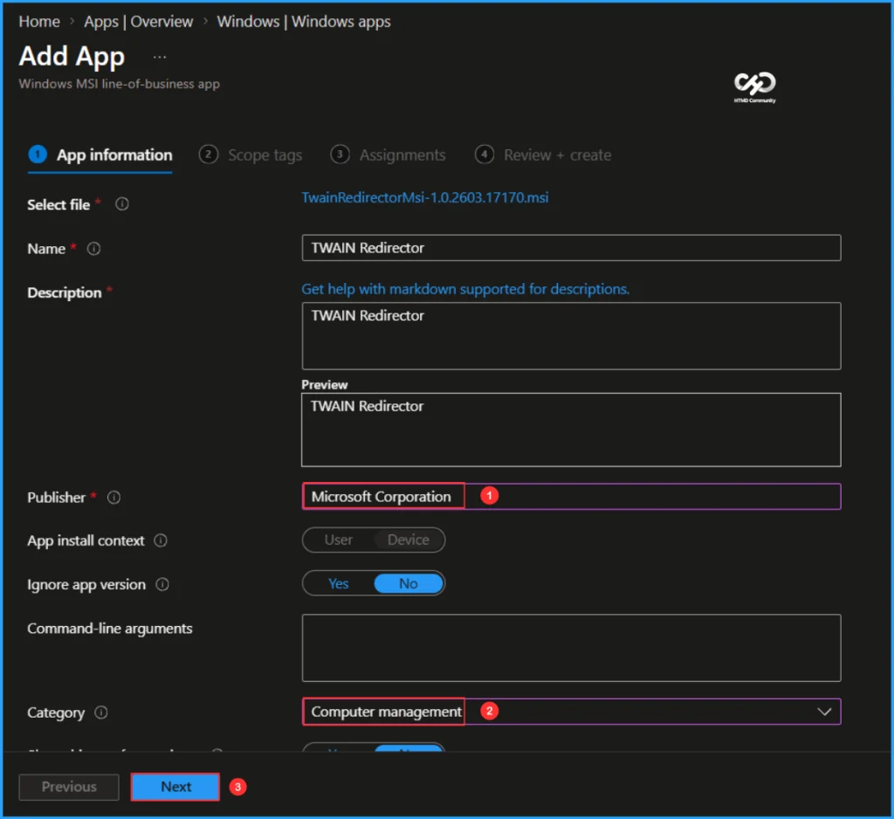
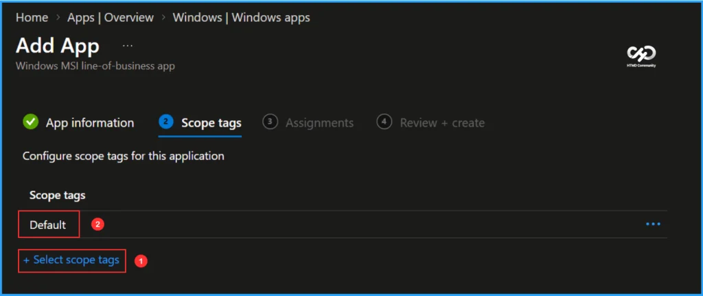
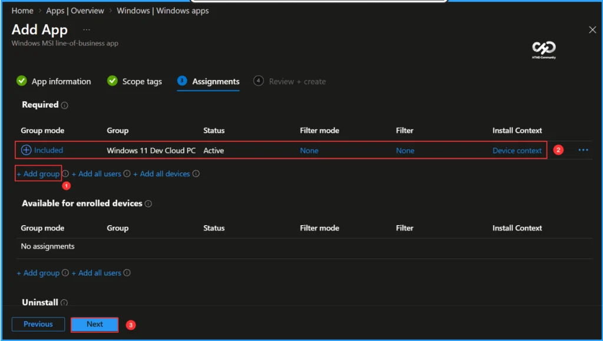
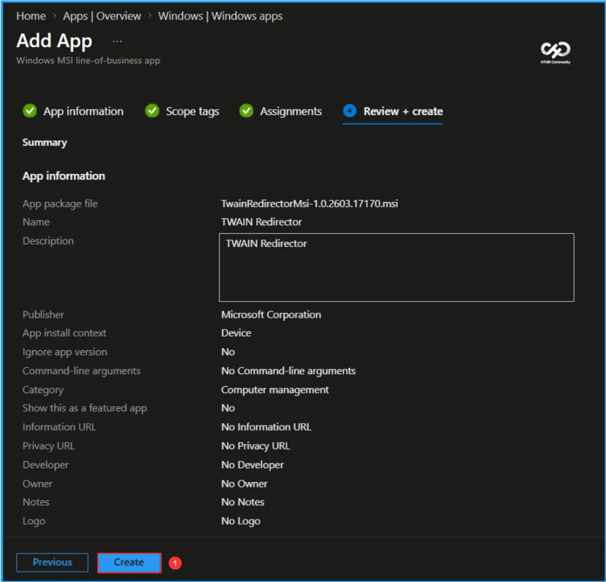
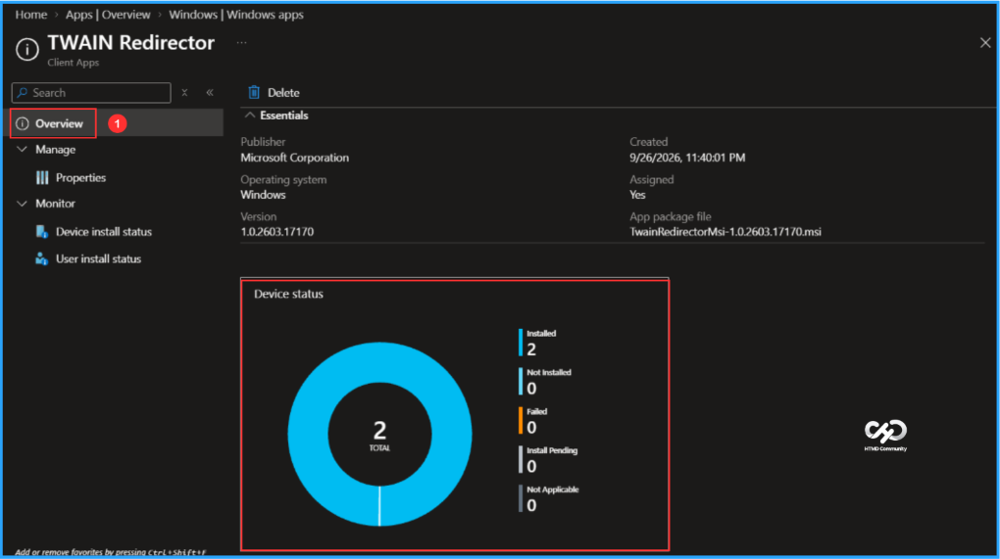
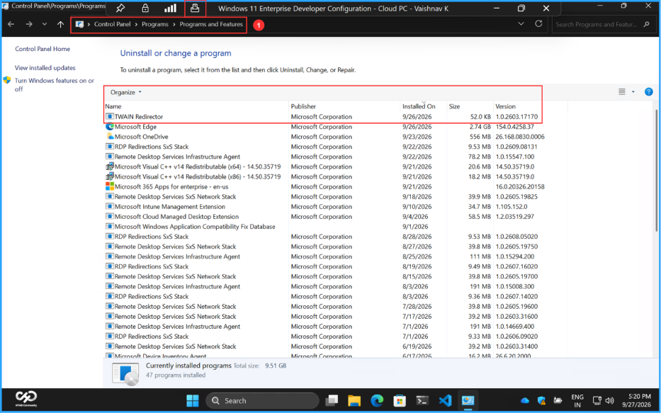

Key Takeaways
- Configure scanner redirection from local Windows devices to Windows 365 Cloud PCs over RDP.
- Understand supported scanner redirection methods, including TWAIN and high-level peripheral redirection.
- Explore the new TWAIN scanner redirection public preview for Windows 365.
- Enable an optimised scanning experience with high-level redirection instead of USB redirection.
In this blog post, let’s discuss about how to use TWAIN scanners in remote sessions for Windows 365. TWAIN scanner redirection is now available in public preview for Windows 365. It lets you redirect supported scanners connected to a local Windows device to a Cloud PC using high-level redirection, delivering a more optimised, seamless scanning experience than traditional USB redirection.
Prerequisites
Scanner redirection prerequisites for Windows 365 Cloud PCs. Before configuring scanner redirection, ensure the following:
- A Cloud PC is already provisioned.
- A TWAIN-compatible scanner is connected to the local device.
- The scanner’s driver is installed and functioning correctly on the local device.
- A Microsoft Entra ID account with the Policy and Profile Manager RBAC role is assigned.
- You need to connect to a remote session from a supported app and platform. Windows App for Windows devices must be on build 2.0.1070.0.
Note: To view redirection support in Windows App and the Remote Desktop app, see Compare Windows App features across platforms and devices and Compare Remote Desktop app features across platforms and devices.
Cloud PC & Local Device Configuration
To configure TWAIN scanner redirection, you need to configure the required settings on both the Cloud PC and the local Windows device. The table below provides the key configuration steps, registry settings, and components required to enable scanner redirection.
| Component | Configuration | Value / Command | Purpose |
|---|---|---|---|
| Cloud PC | Review default configuration | Scanner redirection is not blocked at the OS level | Confirms that Windows isn’t preventing scanner redirection |
| Cloud PC | Enable TWAIN scanner redirection | fTWAINRedirectionEnabled = 1 | Enables scanner redirection from the local device to the Cloud PC |
| Cloud PC | Run as Administrator | reg add “HKLM\SOFTWARE\Policies\Microsoft\Windows NT\Terminal Services” /v fTWAINRedirectionEnabled /t REG_DWORD /d 1 /f | Enables TWAIN scanner redirection on the Cloud PC |
| Cloud PC | Install TWAIN Redirector | TwainRedirectorMsi-1.0.2603.17170.msi | Installs the required TWAIN redirection component on the Cloud P |
| Local Windows Device | Configure scanner name mode | fTWAINRedirectionEnableMode = 1 | Redirects the scanner while preserving the actual scanner name |
| Local Windows Device | Configure generic scanner mode | fTWAINRedirectionEnableMode = 2 | Redirects the scanner as Redirected TWAIN Scanner |
| Local Windows Device | Run as Administrator | reg add “HKLM\SOFTWARE\Policies\Microsoft\Windows NT\Terminal Services\Client” /v fTWAINRedirectionEnableMode /t REG_DWORD /d 1 /f | Configures the scanner naming behaviour for the remote session |
Download the TWAIN Redirector Application for Windows
As per microsoft documentation, we need to download the TwainRedirectorMsi-1.0.2603.17170.msi

Create Windows Line of Business Apps in Intune
To create a TWAIN Redirector application for Windows, sign in to the Microsoft Intune Admin Center using your administrator credentials.
- Navigate to Apps > Platforms > Windows
- Click + Create

After clicking + Create, a new window will appear prompting you to select the app type. Choose Line-of-business app from the available options.

On the App Information page, select the application package file. Click Select app package file, browse to the downloaded MSI file, and choose TwainRedirectorMsi-1.0.2603.17170.msi. Once you select the package, the application details will populate automatically. Review the information and click OK to continue.
- Name: TWAIN Redirector
- Platform: Windows
- Size: 72 KiB
- MAM Enabled: No
- Execution Context: Per-Machine

The TWAIN Redirector is now available as a Windows MSI Line-of-business app. Most required application details populate automatically from the MSI package. Under App Information, specify the Publisher as Microsoft Corporation and select Computer Management as the Category. The remaining fields are optional and can be configured as needed. Once completed, click Next.

On the Scope tags page, click + Select scope tags and choose Default. If your organization uses custom scope tags for role-based access control (RBAC) and delegated administration, select the scope tags that align with your administrative requirements and access boundaries. After selecting the appropriate scope tags, click Next to continue.

Here, I am assigning the Line-of-Business (LOB) application to the Windows 11 Dev Cloud PC device group. Under Assignments, select Required, click Add group and choose the target device group. Then, configure the Install context setting as Device to ensure the application is installed for the device regardless of the signed-in user. Once the assignment settings are configured, click Next to continue with the deployment.

On the Review + create page, carefully review all the settings you’ve defined for the TWAIN Redirector application. Select Create to implement the changes once you’ve confirmed everything is correct.

Monitor the Deployment of TWAIN Redirector Application
This app has been deployed to the Microsoft Entra ID device group. The policy will take effect as soon as the device syncs. To monitor the deployment status from the Intune Portal, follow the steps below.
- Navigate to Apps > Platforms > Windows > Windows apps > Search for the “TWAIN Redirector” LOB App.
- Under the Overview status, you can see the deployment status for both Device & User.

End-User Experience
Verify that the TWAIN Redirector application has been installed successfully. Open the Windows App and connect to your Cloud PC. With the remote session in full-screen mode, select the Devices icon on the status bar to view and manage connected scanners. This icon appears only when Scanner or USB redirection has been configured successfully.
To check the application status, open Control Panel and navigate to Programs > Programs and Features. In the list of installed applications, confirm that TWAIN Redirector is present.

Need Further Assistance or Have Technical Questions?
Join the LinkedIn Page and Telegram group to get the latest step-by-step guides and news updates. Join our Meetup Page to participate in User group meetings. Also, join the WhatsApp Community and the WhatsApp channel to get the latest news on Microsoft Technologies. We are there on Reddit as well.
Author
Vaishnav K has 13 years of experience in SCCM, Intune, Modern Device Management, and Automation Solutions. He writes and shares knowledge about Microsoft Intune, Windows 365, Azure, Entra, PowerShell Scripting, and Automation. Check out his profile on LinkedIn.